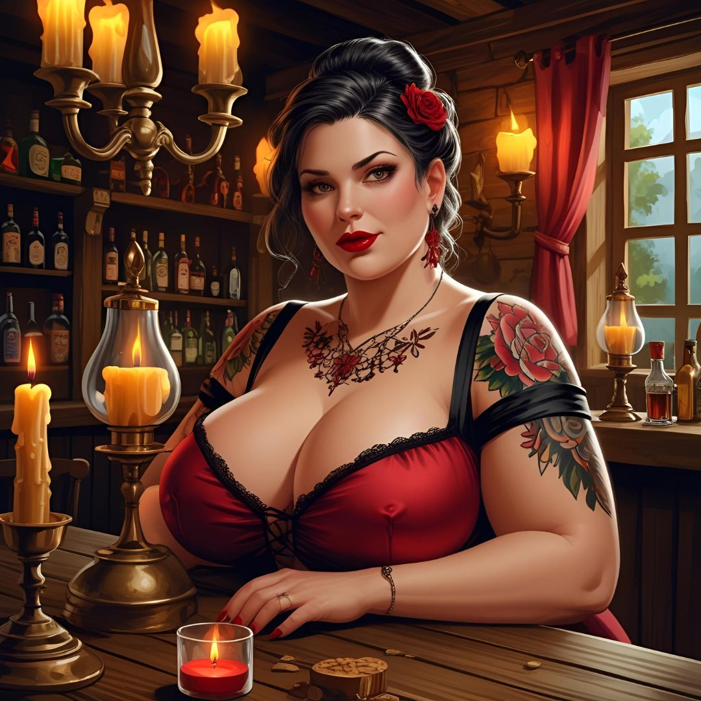
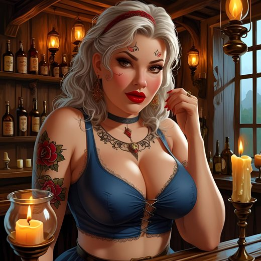

La taverne de la Couronne Brisée (Chrysophée)




- Une taverne au milieu des ruines de Chrysophée, l'ancienne capitale du Vieux Royaume. On s'étonne qu'elle existe encore.
- Tenue par la grosse Lulette, avec Polia comme serveuse.
- Les héros s'y sont arrêtés. Ils y ont déclenché une bagarre, et ils sont désormais interdits d'entrée.